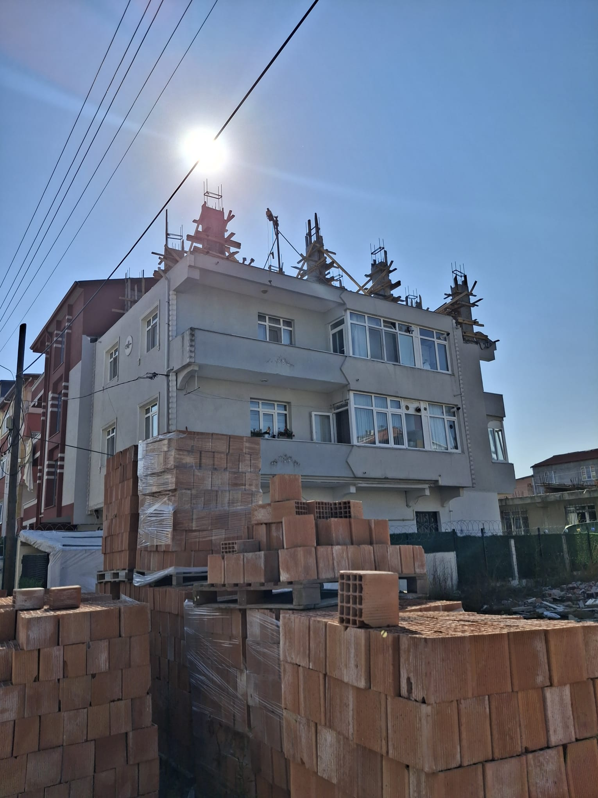

Fotoğraf ve video analizi
Yıldız Konutları B Blok · Akdeniz Pompa / Serkan Demir yükledi · 18.11.2026 09:48–10:12
Zorunlu fotoğraf türleri · Form 03'e göre · YZ sınıflandırdı5 / 6
EksikPompa ayağı zemini
Fotoğraf 1
—

Saha videosu · 48 sn
18.11.2026 09:55 · konum doğrulandı · sesli anlatım var
00:06
00:23
 00:39
00:39Sesli anlatım (sesten metne)
«…pompayı buraya, binanın önüne kuracağız. Hat şurada, yukarıdan geçiyor, aşağı yukarı yedi sekiz metre var. Malzemeleri kenara çektirdik, mikser şu sokaktan gelecek…»
✦ YZ: Operatörün sözlü tahmini (7–8 m), formdaki beyanından (7,5–10 m) düşük ve fotoğraf tahminine (6–8 m) yakın.
Pompa yerleşim krokisi
✦ YZ: Elle çizilmiş kroki dijitalleştirildi. Pompa hattın aynı cephesinde ve bom açılım alanı hattın altına giriyor. Öneri: pompayı binanın güney cephesine (sokak tarafı) almak.
Pompacının yüklediği orijinal kroki fotoğrafı · 18.11.2026 10:08